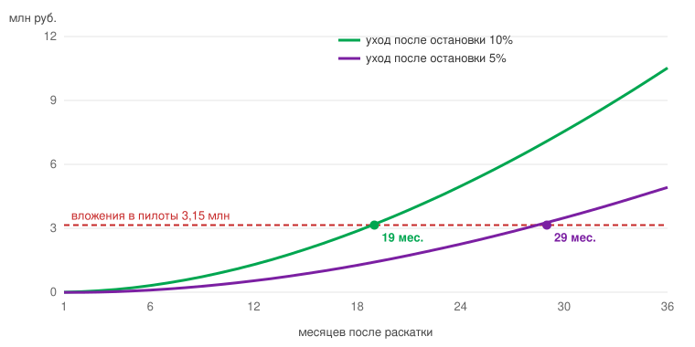

Стратегия: связь для близких и собственных устройств
Документ из пяти частей по брифу МегаФона. После пересмотра 22.11.2026 первыми идут владельцы нескольких номеров, семьи — вторым шагом (revisit-2026-11-22.md). Все числа брифа учебные; расчёты — state/analysis/; полные доказательства — отчёт report.pdf.
Коротко для руководителя
- Первые клиенты. Владельцы нескольких собственных номеров, у которых второй номер стоит в роутере, модеме или планшете. Оператору доступно 40 тыс. таких владельцев [1]. Напоминание охватит около 20 тыс. из них — тех, у кого оператор видит второй номер с отдельной оплатой гипотеза.
- Проблема. Владелец не всегда успевает заметить, что деньги на втором номере закончились [2]. Важный момент — день очередного списания по номеру роутера [3]. Остановка за неоплату — это прямо потерянные оплаченные дни и риск ухода номера.
- Предложение. За 3 дня до списания по второму номеру — напоминание с суммой и пополнением в одно действие. В кабинете баланс и дата списания показаны по каждому номеру отдельно от состояния связи. Объединить номера в кабинете можно по желанию — это и есть подключение владельца [4].
- Ожидаемый результат.
- Остановок за неоплату станет меньше: с 7% до 4,9% вторых номеров в месяц гипотеза.
- После раскатки в июле: +0,55 млн руб. в плановом году до вычета напоминаний, около +0,31 после и +1,78 млн руб. за первые 12 месяцев. Напоминания стоят 0,48 млн руб. в год прогноз[5].
- Оба пилота стоят около 3,15 млн руб. и окупаются примерно за 19–29 месяцев после раскатки прогноз[5].
- Подключённых владельцев будет 1 500 вместо 1 000 прогноз[6].
- Второй шаг — семьи. Организатор получает сигнал о низком остатке у близкого и добавляет интернет из общего остатка. Это польза для клиента, а не деньги: около +0,07 млн руб. в год прогноз[7]. Пилот — в III–IV кварталах, на тех же компонентах.
- Главное, что нужно знать.
- Цель 285 млн руб. в плановом году не достигается: разрыв 5,7 млн руб. прогноз[6].
- Во втором году напоминание владельцам даёт +1,7–3,7 млн руб. чистыми при уходе номеров после остановки 5–10% прогноз[8].
- По остальному разрыву нужно решение руководителя: тест приглашения новых номеров (F) или пересмотр цели (C9).
1. Клиент и его проблема
Один случай
Пример собран агентом гипотеза. Он показывает, какие записи нужны для разбора настоящих историй.
- 12-е, вечер. У Ивана роутер на даче с отдельным номером, тариф списывается 15-го. Связь работает, на счёте 40 руб. при плате 450 руб. гипотеза
- 15-е, 00:05. Денег не хватило, услуги по номеру остановлены.
- 16-е, утро. Соседка пишет Ивану, что камера и умная розетка «не в сети». Иван не понимает, сломан роутер или выключен свет.
- 16-е, вечер. Иван звонит в поддержку и узнаёт, что номер остановлен за неоплату. Он пополняет счёт, связь возвращается.
Последствие: сутки без связи на даче и время на выяснение причины. Последний момент, когда оператор мог помочь, — 12–14-е, за 1–3 дня до списания гипотеза.
Что спросим у клиента:
- Когда в последний раз номер роутера перестал работать?
- Как вы это заметили и от кого узнали?
- Знали ли вы сумму и дату списания?
- Что сделали сами и сколько времени ушло на выяснение?
Записи оператора, которые восстановят ход событий: даты и суммы списаний по номеру, баланс по дням, остановки с причиной, платежи и их зачисление, обращения в поддержку (data-request.md).
Сигнал и причина. «Роутер не в сети» — это сигнал, а не причина. Возможны три версии:
- остановка за неоплату — нужны баланс, дата и результат списания;
- исчерпан пакет — нужны остаток и причина ограничения;
- выключено или сломано устройство — оператор этого не видит, нужны данные самого устройства [2].
Наше действие отвечает только на первую версию. Если связь оплачена, а устройство выключено, мы помочь не обещаем.
Первый приоритет
Бриф называет три возможные причины отставания базового года: меньше пришло клиентов, подключённые группы реже делают полезное действие, номера раньше перестают приносить выручку [9].
- Остановка второго номера за неоплату — прямой случай третьей причины. Каждая предотвращённая остановка возвращает оплаченные дни и уменьшает уход номеров прогноз[5].
- Отставание активных групп: около 667 — из-за числа групп, около 333 — из-за доли активных [10]. Это задача второго шага, для семей.
| Проблема | Сколько клиентов сталкивается | Как часто | Тяжесть | Помощь вовремя | Денег в год |
|---|---|---|---|---|---|
| Остановка второго номера за неоплату | ≈20 тыс. владельцев в охвате, ≈1 400 остановок в месяц гипотеза | раз в цикл списания | связь на устройстве пропала, оплаченные дни потеряны | почти всегда, если напоминание пришло до дня списания [3] | +1,78 млн руб. за 12 месяцев прогноз[5] |
| Перебой интернета у близкого | среди 8 000 групп ≈3 500 с низким остатком в месяц, ограничено ≈420 гипотеза | каждый месяц | человек без связи | если сигнал пришёл до ограничения | +0,07 млн руб. прогноз[7] |
| Непонятное списание [11] | неизвестно, вероятно, больше гипотеза | по каждому счёту | время и недоверие, связь есть | только разбор после события | не оценено |
Почему первыми владельцы.
- Бриф спрашивает, почему оператору стоит вложить деньги, а заметно двигает прибыль только этот рычаг.
- Его можно проверить: нужно 1 989 владельцев в ветке, а доступно 40 тыс. прогноз[5].
- Приглашать другого человека не нужно [12].
Почему семьи — второй шаг.
- Сигнал для семей решает настоящую боль, но денег почти не даёт прогноз[7].
- Ему нужно разрешение участника, а проверить его можно только на пуле около 1 950 групп прогноз[13].
- Показ баланса и статуса операции, сделанный для владельцев, пригодится семьям.
Почему не непонятное списание. Помочь при нём можно только после события, и связь не прерывается. Если выгрузка покажет, что такие обращения заметно чаще и дороже, приоритет переходит к кабинету начислений (C) гипотеза.
Проверяемое предположение. Если владелец получает напоминание за 3 дня до списания, доля вторых номеров с остановкой за неоплату в цикле списания снизится на 1,3 п. п. и больше, то есть на 19% от 7% прогноз[5].
Сменим приоритет, если:
- остановки за неоплату случаются реже чем у 3% вторых номеров в месяц гипотеза;
- оператор видит второй номер с отдельной оплатой меньше чем у 20% доступных владельцев гипотеза;
- пилот покажет снижение меньше чем на 1 п. п. гипотеза.
2. Предложение и путь к клиенту
Услуга глазами владельца
- Обещание: «Напомним до дня списания, сколько и куда заплатить, чтобы роутер не остался без связи. Оплатить можно в одно действие».
- Где работает: на номерах владельца, по которым оператор видит дату и сумму списания. Платёж подтверждает тот, с чьего счёта спишут деньги [14]. Если владелец и плательщик — разные люди, напоминание получает плательщик.
- Плата: бесплатно, услуга входит в обслуживание. Напоминания обходятся оператору около 0,48 млн руб. в год прогноз[5].
Путь владельца
- За 3 дня до списания приходит напоминание: «По номеру роутера …-12 15-го спишется 450 руб., на счёте 40 руб.» гипотеза.
- Ссылка ведёт в кабинет, где этот номер уже выбран. Счёт (баланс, сумма и дата списания) показан отдельно от связи (работает номер или остановлен) [15]. Заряд и включённость устройства не показываем: для этого нужны данные самого устройства [2].
- Владелец пополняет счёт в одно действие или ставит автоплатёж на этот номер.
- Если номера ещё не объединены, предлагаем объединить, чтобы видеть их в одном месте. Это необязательно [4].
- Если владелец не отреагировал, за 1 день до списания приходит второе напоминание. Дальше — тишина, без давления.
Одна операция до конца — пополнение по напоминанию
- Видны номер и сумма, которой хватит на ближайшее списание.
- Плательщик подтверждает платёж [14].
- Пока система расчётов не подтвердила зачисление, виден статус «платёж обрабатывается» и где проверить итог.
- Итог: «Зачислено 450 руб. на номер …-12, списание 15-го пройдёт» гипотеза.
- Повторное нажатие не создаёт второго списания: операция с этим номером и суммой уже есть.
- Спорный платёж поддержка находит по номеру и времени [16].
Почему выберут этот способ
База сравнения — текущее уведомление о балансе: оно приходит на SIM в самом роутере, где его никто не читает гипотеза.
- Сегодня владелец пополняет счёт сам через личный кабинет, где переключается между номерами [2], смотрит в приложение роутера или ставит банковский автоплатёж — его настраивают не все [17].
- Банк подтверждает перевод, а зачисление на нужный номер проверяется только у оператора [17].
- Напоминание привязано к дате списания конкретного номера. Исчезает шаг «вспомнить и проверить», и вмешаться можно за 1–3 дня до остановки гипотеза.
Состав первого запуска
- Уже есть: переключение между своими номерами в кабинете [2] и пополнение.
- Добавляем:
- напоминание по дате списания;
- раздельный показ счёта и связи;
- статус платежа.
- Разработка: около 0,5 человеко-месяца гипотеза. Если напоминание настраивается без разработки, пилот начинается в апреле.
- Без чего обходимся: заряд устройства, кабинет начислений, автоматика.
Проверка удобства
Проверяем на 5–8 владельцах гипотеза. Задача — найти дату и сумму списания по номеру роутера и оплатить. Каждый решает её двумя способами: привычным (кабинет или автоплатёж) и новым (напоминание). Порядок способов меняем от участника к участнику. Смотрим, кто справился без подсказки, где ошибся и сколько времени это заняло.
Что пригодится семьям (второй шаг)
- Переиспользуем: раздельный показ счёта и связи, статус операции, защиту от повторного нажатия.
- Проверяем заново: разрешение участника видеть остаток [14] и момент сигнала — для семей это низкий остаток, а не день списания.
- Путь семьи длиннее: нужно пригласить другого человека [12].
Привлечение и прогноз подключений
| Владельцы | Семьи (домохозяйства) | |
|---|---|---|
| Весь рынок | 180 тыс. [18] | 300 тыс. [18] |
| Доступно | 40 тыс. [1] | 100 тыс. [1] |
| Подключено на конец года без изменений | 1 000, то есть 2,5% [4, 10] | 8 000, то есть 8% [19, 10] |
| Подключено на конец года, основной прогноз | 1 500, то есть 3,75% прогноз[6] | 8 100, то есть 8,1% прогноз[6] |
| Кому подходит первый сценарий | ≈20 тыс. с видимым вторым номером с отдельной оплатой гипотеза | второй шаг: ≈2 400 групп с разрешением прогноз[7] |
Каналы и воронка владельцев гипотеза
| Шаг или канал | Сколько клиентов | Доля | Итог | Как проверить |
|---|---|---|---|---|
| Напоминание до списания | ≈1 400 остановок в месяц у ≈20 тыс. владельцев | снимает 30% | ≈420 остановок меньше прогноз[5] | пилот, ветки по владельцам |
| Предложение объединить номера из напоминания | ≈20 тыс. владельцев | 2–3% за полгода | +500 подключённых прогноз[6] | сравнение с контрольной веткой |
| Поддержка, обращение «роутер не работает» | ≈600 в год гипотеза | 20% | ≈120 | скрипт оператора, одна смена |
Подключение засчитываем первому каналу, где человек объединил номера. Прирост считаем против ветки без напоминания.
Цена дополнительного подключения = расходы канала / прирост к обычному обслуживанию. Для напоминания расходы — около 0,48 млн руб. в год прогноз[5]. Но окупается оно не подключениями, а сохранёнными оплаченными месяцами.
Сведение чисел владельцев. Без изменений — 1 000 [4]. После напоминания номера объединят ещё около 500 прогноз[6]. Итог — 1 500. До цели 2 000 не хватает 500.
Семьи. Воронка без изменений: при распаде 15–25% групп в год гипотеза создают около 4 125–5 208 групп, приглашение принимают около 2 475–3 125, первое действие за 14 дней совершают около 1 856–2 344 прогноз[20].
Сигнал для семей — второй шаг. Он добавляет около 158 групп, которые иначе были бы неактивны прогноз[7], и около 62 сохранившихся групп. Итог — 5 223 активных прогноз[6]. Часть этого роста механическая: открытие сигнала уже считается активностью [21].
3. Польза для клиента и прибыль оператора
| Что измерить | Как | Числитель / знаменатель |
|---|---|---|
| Польза для клиента | вторые номера, остановленные за неоплату в цикле списания после первого напоминания | остановленные / все номера ветки, включая тех, кто не открыл напоминание |
| Работа услуги | платежи по напоминанию, зачисленные до дня списания | зачисленные вовремя / начатые; незавершённые — отдельно |
| Нежелательные последствия | жалобы на лишние сообщения, отписки, двойные платежи, ошибочный номер в напоминании | случаи / напоминания |
Пилот E.
- Распределение: случайное, по владельцам — все номера одного владельца попадают в одну ветку [22].
- Размер: 1 989 владельцев в ветке, всего 3 978 из 40 тыс. прогноз[5]. Набор — сразу, исход виден через 1–2 цикла списания.
- Правило решения: расширяем, если остановок стало меньше на 1,3 п. п. и больше (19% от 7%). Это односторонний 5%-й критерий: стандартная ошибка разницы 0,81 п. п. прогноз[5].
- Исходные 7% — допущение. Если выгрузка покажет другое, пересчитаем выборку до старта гипотеза.
Прибыль: вложения против накопленной прибыли E после раскатки (с вычетом напоминаний) прогноз[5]
| Месяц после раскатки | Накоплено | Вложения в оба пилота |
|---|---|---|
| 3 | +0,07 млн руб. | 3,15 млн руб. прогноз[6] |
| 6 | +0,31 млн руб. | 3,15 млн руб. прогноз[6] |
| 12 | +1,30 млн руб. | 3,15 млн руб. прогноз[6] |
| 18 | +2,87 млн руб. | 3,15 млн руб. прогноз[6] |
- Окупаемость — около 19 месяцев после раскатки при уходе номеров 10% (к началу 2029 года) и 29 месяцев при 5% прогноз[8].
- Когда не раскатываем: в неблагоприятном сценарии E за 12 месяцев даёт +0,17 млн руб. при 0,29 млн руб. расходов на напоминания прогноз[5].

График построен по тому же расчёту прогноз[8]: при уходе номеров после остановки 10% вложения окупаются за 19 месяцев, при 5% — за 29.
Граница решения.
- Цель требует +6 млн руб. = 12 000 дополнительных оплаченных месяцев [23, 24].
- За первые 12 месяцев E даёт около 1,3 млн руб. чистыми в базовом сценарии, а в благоприятном — больше всего разрыва прогноз[5].
- Формула вклада E = владельцы в охвате × частота остановок × доля предотвращённых × (потерянная доля месяца + уход после остановки × оставшиеся месяцы) × 500 руб. − расходы на напоминания прогноз[5].
Удержание проверяем по платежам исходных веток через 3 и 6 месяцев. Номер наблюдаем и после того, как владелец объединил или разъединил номера.
Экономия поддержки = предотвращённые обращения «роутер не работает» × затраты, которые действительно исчезнут [25]. В расчёт её не включаем: эти затраты неизвестны гипотеза.
Семьи (второй шаг). Главный показатель — доля групп с ограничением за 7 дней после низкого остатка [26]. Пилот — 1 760 групп, расширяем при снижении на 2,5 п. п. и больше прогноз[13]. Денег сигнал почти не даёт — около +0,05 млн руб. за 12 месяцев с вычетом допакетов и СМС прогноз[13]. Финансируем ради пользы для клиента.
Из чего состоят деньги E и что решает исход прогноз[5]
- В базовом сценарии за 12 месяцев 1,78 млн руб. складываются так: 0,25 млн — дни простоя (3 дня на остановку гипотеза) и 1,52 млн — номера, которые ушли бы после остановки. Главное допущение — уход номера после остановки за неоплату: в базовом сценарии 10% гипотеза. Исторический уход не отличает причину от отбора: номера могут бросать (сезонная дача, списанный роутер), и тогда напоминание лишь переносит уход. Поэтому решающая проверка — разница оплаченных месяцев с сохранённой контрольной веткой через 6 месяцев: раскатка продолжается только при разнице не меньше 3% гипотеза.
- Если платёж просто переносится и никто не уходит, E не даёт ничего.
- Безубыточность по расходам на напоминания (0,48 млн руб. в год): при уходе 2% эффект напоминания должен быть не ниже 26%, при 5% — не ниже 14%, при 10% — не ниже 8% прогноз[5].
- Поэтому уход номеров после остановок за прошлый год — первая выгрузка I квартала. Раскатка требует ухода не меньше 5% гипотеза.
- Остальные решающие допущения: частота остановок (4–10%), доля владельцев с видимым вторым номером (30–70%), эффект напоминания (20–40%) гипотеза.
4. Стратегический выбор и план по кварталам
| Оставить как есть | Напоминание владельцам (рекомендуем) | Сигнал семьям (второй шаг) | Общий кабинет | |
|---|---|---|---|---|
| Польза | остановки и перебои остаются [11, 2] | связь на устройстве не прерывается из-за забытой оплаты | помощь близкому до ограничения | обзор остатков и начислений, если открыть |
| Для скольких | — | ≈20 тыс. владельцев гипотеза | ≈2 400 групп прогноз[7] | все группы |
| Затраты | 0 | 0,48 млн руб. в год на напоминания прогноз[5] и ≈0,5 человеко-месяца разработки гипотеза | ≈1,5 человеко-месяца гипотеза | больше 3 человеко-месяцев гипотеза |
| Деньги за 12 месяцев после вычета прямых расходов | 0 | +1,30 млн руб.: 1,78 минус 0,48 на напоминания прогноз[5] | +0,05 млн руб.: после допакетов, СМС и разбора споров прогноз[13] | не оценено |
| Первые результаты | — | к концу II квартала | в III–IV квартале | позже |
| Цена ошибки | цели не достигнуты [10] | лишние напоминания — пилот остановим | потерян пилот | потеряна разработка |
Когда переходить к кабинету. Финансируем кабинет C, если выполняются оба условия гипотеза:
- обращений о начислениях больше, чем «роутер не работает» и «нет интернета у близкого» вместе;
- в ветках с напоминанием не меньше 30% клиентов ищут начисления гипотеза.
Бриф требует сначала сравнить кабинет с простым способом [27].
| Квартал | Что должно стать известно | Решение |
|---|---|---|
| I | частота остановок вторых номеров; у скольких владельцев виден второй номер; можно ли напоминать без разработки; задержка зачисления платежей [28] | одобрить пилот E, изменить условия или сначала устранить препятствие |
| II | пилот E в апреле–мае: изменились ли остановки за 1–2 цикла и исполнены ли платежи; у семей — входит ли остаток в сведения, которые участник разрешает видеть [14] | расширять E на всю доступную базу с июля, доработать или остановить; финансировать ли тест F |
| III | раскатка E, первые данные об удержании; пилот семей (B); тест F | расширять только то, для чего есть основания |
| IV | итог пилота семей; деньги E за полгода; подключения и расходы | что финансировать в следующем году |
Прогноз по пяти строкам таблицы брифа прогноз[6]
| Показатель | Без изменений [29, 30, 19, 4, 31] | Основной | Менее благоприятный | Цель | Разрыв основного | Цена устранения и решение |
|---|---|---|---|---|---|---|
| Валовая прибыль, млн руб. | 279 | 279,3 | 278,9 | 285 | 5,7 | со второго года E даёт +1,7–3,7 млн руб. во втором году прогноз[8]; остаток — тест F (≈6 000 новых номеров, ≈1,8 млн руб. бонусов прогноз[13]) или пересмотр цели |
| Активные группы, последний месяц | 5 000 | 5 223 | 5 000 | 8 000 | 2 777 | нужен рост числа групп; цена — как у подключений |
| Подключённые группы | 8 000 | 8 100 | 8 000 | 12 000 | 3 900 | 3 900 × цена подключения; при 3 000 руб. за группу гипотеза ≈11,7 млн руб. |
| Владельцы нескольких номеров | 1 000 | 1 500 | 1 100 | 2 000 | 500 | предложение объединить номера в напоминании; при 3 000 руб. за подключение гипотеза ≈1,5 млн руб. |
| Активированы за 14 дней | 45% | 48% | 43% | 60% | 12 п. п. прогноз[6] | запрос разрешения при создании группы — второй шаг |
Основной прогноз выполняется при двух условиях: пилот E успешен и раскатан в июле, а пилот семей успешен в IV квартале. Менее благоприятный прогноз — если ни одно из условий не выполнилось прогноз[6].
Ориентир на конец третьего года (2029) прогноз[6]
- Владельцы: 3 000 объединивших номера — это 7,5% из 40 тыс. доступных; разброс 2 000–4 000. Во втором году напоминания дают +1,7–3,7 млн руб. прибыли прогноз[8].
- Семьи: 12 700 подключённых групп — это 12,7% из 100 тыс.; из них активных не меньше 65%. Расчёт: 8 100 + 2 × (1 500 + 800). Разброс 11 100–14 100 прогноз[6].
- Что изменит ориентир: фактическая частота остановок, удержание номеров после напоминаний и стоимость привлечения в F.
5. Ресурсы, риски и решение руководителя
| Кто | Что делает | Объём | Когда |
|---|---|---|---|
| Руководитель направления | одобряет объём, останавливает пилот при срабатывании сторожа | — | I–IV кварталы |
| Аналитик (0,5 ставки, нужно выделить [32]) | выгрузки, расчёт пилотов, мониторинг | 4,5 человеко-месяца, 9 месяцев прогноз[6] | с января |
| Дизайнер (0,5 ставки, нужно выделить [32]) | напоминание, раздельный показ счёта и связи, затем экраны для семей | 3 человеко-месяца прогноз[6] | I–II квартал |
| Разработчики | напоминание и статус платежа (≈0,5), затем сигнал для семей (≈1,5) | 2 из 3 выделенных человеко-месяцев гипотеза | II квартал |
| Специалист по проверке | обычные действия и отказы; тестирование пока не подтверждено [32] | 1 человеко-месяц | II квартал |
| Владелец системы расчётов | даты списаний по номерам, задержка зачисления, итоговый статус [28] | — | I квартал, до старта |
| Команда безопасности | кому можно отправлять напоминание, если владелец и плательщик — разные люди | — | I квартал |
| Поддержка | способ найти спорный платёж [16] | — | до старта |
Всего около 10,5 человеко-месяца — примерно 3,15 млн руб. при допущении 0,3 млн руб. за человеко-месяц прогноз[6].
Последовательность работ.
- Январь–март, параллельно: выгрузки, подтверждения владельца системы и команды безопасности, экраны.
- Напоминание ждёт подтверждения дат списаний.
- Пилот E — апрель–май.
- Сигнал для семей разрабатываем после итога E во II квартале и тестируем в III.
Если чего-то нет к старту:
- нет разработки — напоминаем только через существующие уведомления, если это возможно гипотеза;
- нет тестировщика — пилот E идёт на простом напоминании, а семьи сдвигаются на квартал;
- нет данных о датах списаний — пилот E не стартует, а I квартал уходит на выгрузку.
Меньший объём. Можно профинансировать только пилот E: аналитика, 0,5 человеко-месяца разработки и тестирование. Тогда семьи откладываются до итога E гипотеза.
| Риск | Признак | Последствия | Ответственный | Действие |
|---|---|---|---|---|
| Напоминание пришло не тому человеку | любой случай | раскрыты сведения о чужом номере | руководитель направления | пауза до проверки правил адресата [33] |
| Двойное списание | любой случай | потеря денег и доверия | владелец системы расчётов | остановить спорные операции, сверить, помочь клиенту [34] |
| Лишние сообщения | отписки больше 2% за цикл гипотеза | раздражение, жалобы | аналитик | одно напоминание вместо двух, другое время отправки |
| Остановок меньше, а денег нет | платежи переносятся, а не добавляются гипотеза | экономика E не сходится | финансы | смотреть оплаченные месяцы, а не остановки; пересчитать |
| Пилот семей не набирается | меньше 30% разрешений гипотеза | семьи остаются без проверки | дизайнер и аналитик | переписать экран разрешения или отложить |
Перед возобновлением исправление подтверждаем повторной проверкой на тестовых номерах и сверкой операций за период паузы.
Просьба к руководителю — конец I квартала
- Одобрить пилот напоминания владельцам на апрель–май. Нужны аналитик на 0,5 ставки на 9 месяцев, дизайнер на 0,5 ставки на 6 месяцев, около 0,5 человеко-месяца разработки и 1 человеко-месяц тестирования прогноз[6]. Ответственный — руководитель направления.
- Разрешить использовать оставшиеся 1,5 человеко-месяца II квартала на сигнал семьям после итога пилота E гипотеза.
- Поручить владельцу системы расчётов и команде безопасности подтвердить даты списаний и правила адресата до апреля.
Всё вместе — около 3,15 млн руб. прогноз[6].
В конце II квартала руководство увидит: изменились ли остановки за неоплату в ветке с напоминанием, как исполняются платежи и сколько было лишних сообщений.
Выбор на конец II квартала:
- раскатать E на всю доступную базу с июля, доработать или остановить;
- запускать ли пилот семей;
- закрывать оставшийся разрыв по прибыли тестом F или пересмотреть цель.
Источники
| № | Цитата или расчёт | Источник | Качество | Дата публ. |
|---|---|---|---|---|
| 1 | «С учётом действующих тарифов и способов привлечения оператору доступны 100 тыс. домохозяйств и 40 тыс. владельцев.» | sources/megafon-brief.pdf | A | 2026-11 |
| 2 | «Владелец уже может переключаться между своими номерами в личном кабинете. Он не всегда успевает заметить, что деньги или интернет закончились. Оператору доступны сведения о номере. Чтобы показать ещё и заряд батареи, нужны достоверные данные от самого устройства.» | sources/megafon-brief.pdf | A | 2026-11 |
| 3 | «Для владельца собственного устройства важным может оказаться другой момент – например, день очередного списания по номеру роутера.» | sources/megafon-brief.pdf | A | 2026-11 |
| 4 | «Подключённые владельцы нескольких номеров на конец года: план 1 000, оценка 800, без изменений 1 000, цель не ниже 2 000» | sources/megafon-brief.pdf | A | 2026-11 |
| 5 | «E на доступной базе: в охвате 12 000 / 20 000 / 28 000 владельцев, остановок меньше на 96 / 420 / 1 120 в месяц; с июля (6 мес.) +0,05 / +0,55 / +2,38 млн руб.; за 12 мес. +0,17 / +1,78 / +7,44 млн руб. (3% / 30% / 124% годового разрыва); расходы на напоминания 0,29 / 0,48 / 0,67 млн руб. в год; базовые 12 мес.: простой 0,25 млн, уход после остановки 1,52 млн; если платёж только переносится и никто не уходит — 0; безубыточность по расходам на напоминания при уходе после остановки 2% / 5% / 10% — эффект не ниже 26% / 14% / 8% остановок; пилот 7% → 4,9% — 1 989 владельцев в ветке; односторонний порог 1,3 п. п. = 19%; накоплено после раскатки через 3 / 6 / 9 / 12 / 15 / 18 мес. +0,07 / +0,31 / +0,73 / +1,30 / +2,01 / +2,87 млн против вложений 3,15 млн — окупаемость около 20 месяцев» | state/analysis/owners_access.py | C расчёт | — |
| 6 | «плановый год, основной / менее благоприятный: прибыль 279,3 / 278,9 млн руб. (цель 285, разрыв 5,7 / 6,1); активные 5 223 / 5 000 (цель 8 000); подключённые 8 100 / 8 000 (цель 12 000); владельцы 1 500 / 1 100 (цель 2 000); активация 48% / 43% (цель 60%); вложения в пилоты E и B 10,5 человеко-месяца ≈3,15 млн руб. при 0,3 млн за человеко-месяц; второй год: E чистыми +1,73 … +3,68 млн руб. при уходе после остановки 5–10%; ориентир 2029: 11 100 / 12 700 / 14 100 групп (11,1% / 12,7% / 14,1%), активных ≥65% = 7 215 / 8 255 / 9 165; владельцы 2029: 2 000 / 3 000 / 4 000 = 5% / 7,5% / 10% из 40 000» | state/analysis/forecast.py | C расчёт | — |
| 7 | «плановый год с октября, неблагоприятный / базовый / благоприятный: B — групп в услуге 1 080 / 2 400 / 4 200, ограничений меньше на 5 / 48 / 220 в месяц, новых активных групп 22 / 158 / 571, деньги после замещения допакетов ≈0,00 / +0,00 / +0,04 млн руб.; E — остановок меньше на 8 / 27 / 64 в месяц, +0,00 / +0,02 / +0,07 млн руб.; первые 12 месяцев (базовый): B +0,07, E +0,15 млн руб.; нужно 12 000 месяцев = 6 млн; F — потребность ≈6 000 новых номеров с октября без стоимости бонуса; пилот 12% → 8%: 1 760 групп, пул 1 950, набор ≈5 мес.; 12% → 9%: пула не хватает; чувствительность пользы B (ограничений меньше в месяц): сила эффекта 24–72, частота низкого остатка 29–67, разрешение участника 29–67, участников на группу 36–60, совместимые тарифы 36–60» | state/analysis/model.py | C расчёт | — |
| 8 | «уход после остановки 10%: чистыми год 1 +1,30 млн, год 2 +3,68 млн руб., окупаемость вложений 3,15 млн — 19 месяцев; уход 5%: год 1 +0,53 млн, год 2 +1,73 млн руб., окупаемость 29 месяцев» | state/analysis/owners_access.py | C расчёт | — |
| 9 | «Могло прийти меньше клиентов, подключённые группы могли реже совершать полезное действие, а номера – раньше переставать приносить выручку.» | sources/megafon-brief.pdf | A | 2026-11 |
| 10 | «активные базового года 4 000 против плана 5 000: доля активных 61,5% против 66,7%; из-за меньшего числа групп −667, из-за меньшей доли активных −333; прибыль −7 млн руб. = 14 000 оплаченных месяцев по 500 руб.; цели: разрыв 4 000 подключённых и 3 000 активных групп; нужная доля активных 66,7% против 62,5% без изменений; прибыль: разрыв 6 млн руб. = 12 000 месяцев; охват домохозяйств 8,0% → цель 12,0%, владельцев 2,5% → 5,0%» | state/analysis/model.py | A расчёт | — |
| 11 | «Если у близкого закончилась выделенная ему доля, организатор группы уже может добавить интернет из свободного остатка. Трудность в том, что о перебое он порой узнаёт лишь из просьбы о помощи. Возможна и другая причина – например, пропущен платёж. Иногда связь работает, но семье непонятно, за что списали деньги.» | sources/megafon-brief.pdf | A | 2026-11 |
| 12 | «Для собственных номеров путь клиента можно сократить, поскольку приглашать другого человека не требуется.» | sources/megafon-brief.pdf | A | 2026-11 |
| 13 | «пилот E при 1 000 владельцах: для −30% остановок нужно 1 353–3 577 владельцев в ветке — не проверить; пилот B: пул ≈1 950 групп, нужно 1 760; сбор разрешений: через 4 / 8 недель ≈671 / 1 111 групп в пуле; исходная доля 6% / 9% / 12% при снижении на треть: 3 722 / 2 414 / 1 760 групп; правило: стандартная ошибка разницы 1,55 п. п., односторонний 5%-й порог 2,5 п. п. = 21% относительного снижения от 12%; раскатка с октября: 2 400 групп, сигналов 1 050 в месяц, накопленная прибыль за 12 месяцев с вычетом допакетов, СМС и разбора споров ≈+0,05 млн руб. против вложений 3,0 млн; граница B — ≈2 900 предотвращённых ограничений в месяц; цена разрывов: 3 900 групп × 3 000 руб. = 11,7 млн, 950 владельцев = 2,9 млн, 6 000 номеров × бонус 300 руб. = 1,8 млн; ориентир 2029: 11 100 / 12 700 / 14 100 групп; каналы: приложение ≈4 667 подходящих × 60%, поддержка ≈1 200 × 15%, продажи ≈900 × 25%» | state/analysis/plan_calcs.py | C расчёт | — |
| 14 | «Участник решает, какие сведения о его номере можно видеть, и в любой момент может отозвать согласие. Платёж подтверждает тот, с чьего счёта спишут деньги. Организатор, владелец номера и плательщик могут быть разными людьми.» | sources/megafon-brief.pdf | A | 2026-11 |
| 15 | «Владелец выбирает нужный номер и отличает, например, состояние счёта от состояния роутера.» | sources/megafon-brief.pdf | A | 2026-11 |
| 16 | «Поддержке нужен способ найти спорную операцию и объяснить клиенту, что делать дальше.» | sources/megafon-brief.pdf | A | 2026-11 |
| 17 | «Семейный тариф позволяет делиться пакетом, банковский автоплатёж помогает вовремя пополнить счёт, семейный чат позволяет спросить близкого напрямую.» | sources/megafon-brief.pdf | A | 2026-11 |
| 18 | «На учебном рынке помощь со связью нужна 300 тыс. домохозяйств и 180 тыс. владельцев нескольких собственных номеров.» | sources/megafon-brief.pdf | A | 2026-11 |
| 19 | «Подключённые семейные группы на конец года: план 7 500, оценка 6 500, без изменений 8 000, цель не ниже 12 000» | sources/megafon-brief.pdf | A | 2026-11 |
| 20 | «воронка без изменений при распаде групп 15–25% в год: создано ≈4 125–5 208 групп → приглашение приняли ≈2 475–3 125 → первое действие за 14 дней ≈1 856–2 344; распалось ≈975–1 625; цена дополнительного подключения = расходы канала / прирост к обычному обслуживанию, например 300 000 руб. / 100 групп = 3 000 руб.; валовая прибыль группы за 36 месяцев при удержании номера 97–99% в месяц: 2 номера ≈22–30 тыс. руб., 4 номера ≈44–61 тыс. руб.» | state/analysis/funnel.py | C расчёт | — |
| 21 | «Группа активна, если остаётся подключённой на конец месяца и за этот месяц кто-то в ней посмотрел остаток общего пакета или успешно выделил интернет участнику.» | sources/megafon-brief.pdf | A | 2026-11 |
| 22 | «Для нескольких номеров одного владельца по той же причине может понадобиться распределение по владельцам.» | sources/megafon-brief.pdf | A | 2026-11 |
| 23 | «Общая для команд учебная ставка – 500 руб. валовой прибыли за один дополнительный оплаченный месяц одного номера.» | sources/megafon-brief.pdf | A | 2026-11 |
| 24 | «При отсутствии других вкладов и новых прямых расходов для прибавки в 6 млн руб. понадобятся 12 000 дополнительных оплаченных месяцев по 500 руб.» | sources/megafon-brief.pdf | A | 2026-11 |
| 25 | «Экономию на поддержке рассчитайте по числу предотвращённых обращений и затратам, которые действительно исчезнут.» | sources/megafon-brief.pdf | A | 2026-11 |
| 26 | «Доля подходящих номеров, на которых в течение семи дней после первого подходящего случая низкого остатка ограничили интернет из-за исчерпания объёма» | sources/megafon-brief.pdf | A | 2026-11 |
| 27 | «Чтобы обосновать дополнительные затраты именно на кабинет, сопоставьте его с более простым способом – например, предупреждением со ссылкой на уже доступную операцию.» | sources/megafon-brief.pdf | A | 2026-11 |
| 28 | «Например, владелец системы расчётов подтверждает, с какой задержкой обновляются остатки, какие тарифы доступны и где виден окончательный статус операции.» | sources/megafon-brief.pdf | A | 2026-11 |
| 29 | «Валовая прибыль за год, млн руб.: план базового года 282, оценка 275, без изменений в плановом году 279, цель не ниже 285» | sources/megafon-brief.pdf | A | 2026-11 |
| 30 | «Активные семейные группы за последний месяц года: план 5 000, оценка 4 000, без изменений 5 000, цель не ниже 8 000» | sources/megafon-brief.pdf | A | 2026-11 |
| 31 | «Группы, активированные за 14 дней, среди созданных в последнем квартале: план 50 %, оценка 42 %, без изменений 45 %, цель не ниже 60 %» | sources/megafon-brief.pdf | A | 2026-11 |
| 32 | «Дизайнер и аналитик: по половине ставки каждого ещё предстоит выделить; Разработчики: на второй квартал предварительно выделено три человеко-месяца; Специалист по проверке услуги: один человеко-месяц на тестирование пока не подтверждён» | sources/megafon-brief.pdf | A | 2026-11 |
| 33 | «Если после отзыва согласия организатор продолжает видеть чужие сведения, руководитель приостанавливает пилот до проверки и исправления.» | sources/megafon-brief.pdf | A | 2026-11 |
| 34 | «Если платёж списали дважды или выданный объём дважды вычли из общего пакета, владелец системы расчётов останавливает новые спорные операции, сверяет уже исполненные и даёт поддержке возможность помочь клиенту.» | sources/megafon-brief.pdf | A | 2026-11 |